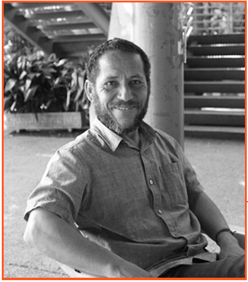
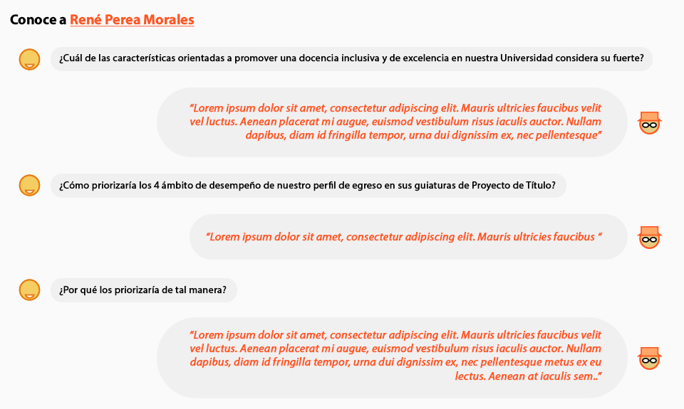

René Perea Morales
Prof. Asistente
Adscrito al Departamento de Diseño
- Estudios
- Diseñador Industrial, Pontificia Universidad Católica de Valparaíso
- Magister en tecnologia de Diseño,Universidad Andrés Bello
Diseño industrial, fabricación digital avanzada y materiales experimentales. Mi enfoque incluye el diseño de experiencia y el desarrollo de prototipos, buscando fusionar estética y funcionalidad para crear soluciones innovadoras y significativas.

Áreas prioritarias en investigación y creación de la Facultad de Arquitectura y Urbanismo:
- Área Prioritaria 5. Creación, innovación proyectual y desarrollos tecnológicos
Líneas de Investigación del Departamento de Diseño
- Materiales, Tecnologías y Procesos
- Morfología, Percepción y Color
Enfasis del Ciclo 3 del Plan de Estudios del Programa Académico
- Innovación
- Investigación
- Creación


¿Cómo se relaciona su nota aprobatoria previa, de Proyecto de Título I, con la nota definida por la comisión examinadora de Proyecto de Título II?
¿Qué parte de las inscripciones en la asignatura de Proyecto de Título II con se han convertido en Exámenes de Título aprobados?
| Egresado/a | Título | Semestre | Proyecto | Nota |
|---|